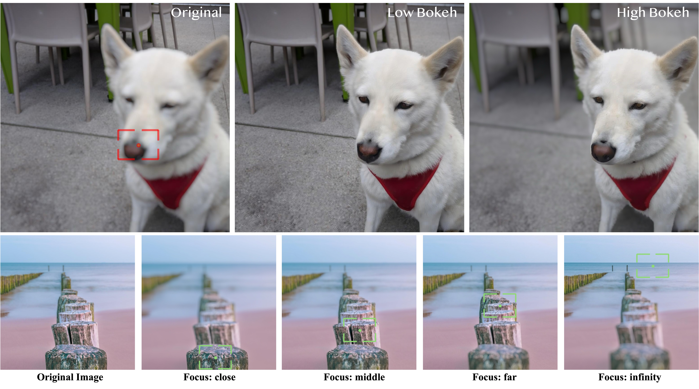
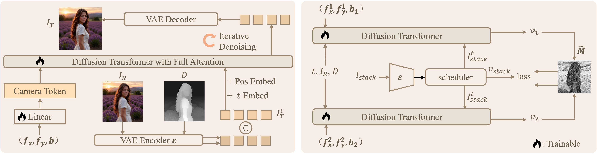
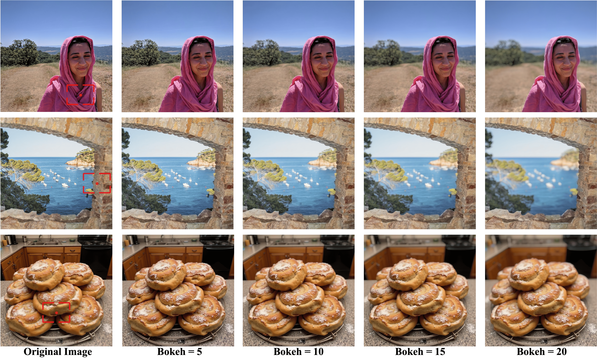
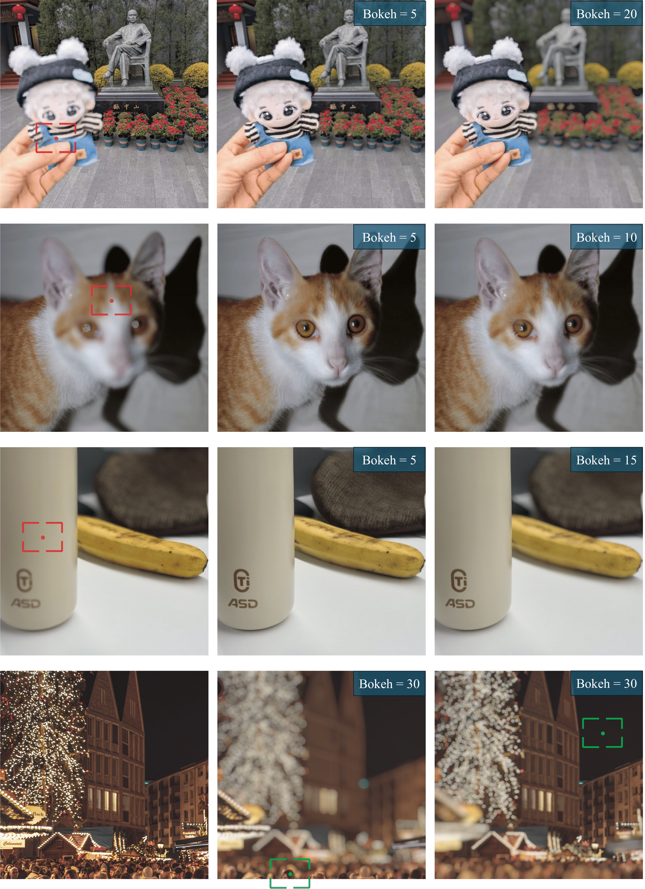

Red frame: target focus point ; Green frame: focus point of the current image.


The depth-of-field (DoF) effect, which introduces aesthetically pleasing blur, enhances photographic quality but is fixed and difficult to modify once the image has been created. This becomes problematic when the applied blur is undesirable (e.g., the subject is out of focus).
To address this, we propose DiffCamera, a model that enables flexible refocusing of a created image conditioned on an arbitrary new focus point and a blur level. As a pioneer work, we design a diffusion transformer framework for refocusing learning. However, the training requires pairs of data with different focus planes and bokeh levels in the same scene, which are hard to acquire. To overcome this limitation, we develop a simulation-based pipeline to generate large-scale image pairs with varying focus planes and bokeh levels. With the simulated data, we find that training with only a vanilla diffusion objective often leads to incorrect DoF behaviors due to the complexity of the task. This requires a stronger constraint during training. Inspired by the photographic principle that photos of different focus planes can be linearly blended into a multi-focus image, we propose a stacking constraint during training to enforce precise DoF manipulation. This constraint enhances model training by imposing physically grounded refocusing behavior that the focusing results should be faithfully aligned with the scene structure and the camera conditions so that they can be combined into the correct multi-focus image. We also construct a benchmark to evaluate the effectiveness of our refocusing model. Extensive experiments demonstrate that DiffCamera supports stable refocusing across a wide range of scenes, providing unprecedented control over DoF adjustments for photography and generative AI applications.
The left image shows the input image where the snowman is slightly out of focus. The right image shows the refocus result where the snowman is in focus, and you can use the slider to control the bokeh level.
Input Image



@article{wang2025diffcamera,
title={DiffCamera: Arbitrary Refocusing on Images},
author={Wang, Yiyang and Chen, Xi and Xu, Xiaogang and Liu, Yu and Zhao, Hengshuang},
journal={SIGGRAPH Asia 2025 Conference Papers},
year={2025}
}